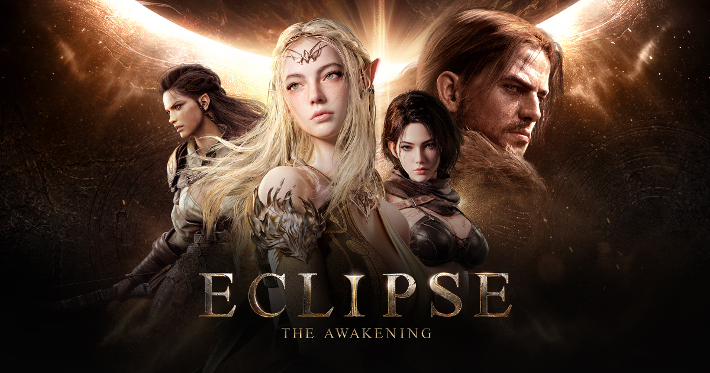
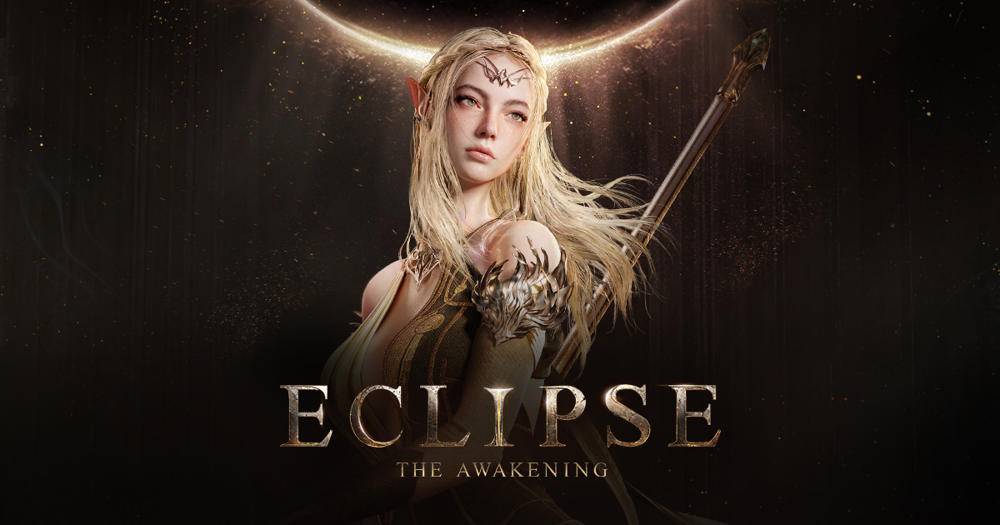
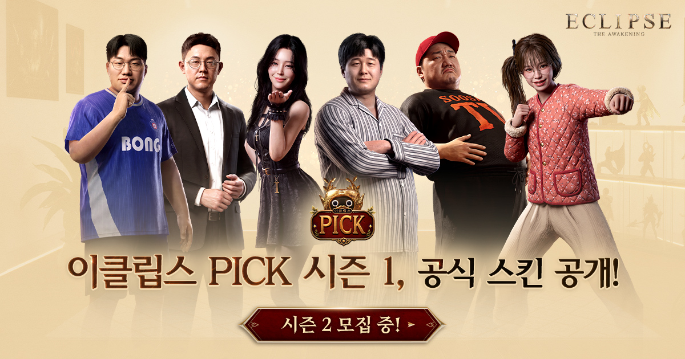

이클립스: 더 어웨이크닝 사전 캐릭터 생성일 D-6, 클래스 정보 총정리 (공개된 4종ㆍ신작 모바일게임추천)
※ 해당 게임은 확률형 아이템을 포함하고 있습니다.
이클립스: 더 어웨이크닝 사전 캐릭터 생성이 이제 D-6, 딱 엿새 남았습니다. 그 사이에 엔픽셀이 만들고 스마일게이트가 퍼블리싱하는 이 게임의 클래스도 4종이나 공개됐고요. 궁금해서 어제 공식 홈페이지에 직접 들어가 봤는데, 사전 캐릭터 생성 배너가 떡하니 걸려 있어서 오늘은 사전 캐릭터 생성일이랑 클래스 정보를 한 번에 정리해 드리려고 합니다.
1. '이클립스: 더 어웨이크닝', 뭐가 다른 게임인가요
'이클립스: 더 어웨이크닝'은 MMORPG 특유의 성장과 경쟁의 재미는 그대로 살리면서 플레이 부담을 낮춘 'MMOLite'를 표방하는 라이트한MMORPG입니다. 타임라이트ㆍ페이라이트ㆍ스트레스라이트, 이렇게 3가지 요소로 부담을 줄였다는데요, 시간에 덜 쫓기고 과금 압박도 덜하고 스트레스도 덜 받게 설계했다는 뜻으로 보시면 됩니다.
성장 지원 시스템인 '성소'도 눈에 띄는데, 매일 오래 접속하지 못해도 성장 재료ㆍ경험치ㆍ소환권 같은 재화가 자리를 비운 동안에도 꾸준히 쌓이는 방식(?)이더라고요.
세계관은 신의 축복 아래 번영한 것처럼 보이는 세계 '에데리온'과 그 이면의 세계 '오르테아'를 무대로, 교단의 절대적 질서 속 인간의 자유 의지와 각성을 다루고, 교단의 사제 '세라하'를 중심으로 전개된다고 합니다.
언리얼 엔진 5 기반이라 PC와 모바일 크로스플랫폼을 지원하는데, 기기별 그래픽 차이는 최소화하면서 전투ㆍ콘텐츠 핵심 경험은 어느 플랫폼에서든 똑같이 가져간다고 하네요.

공식 홈페이지 대표 이미지예요, 보시면 게임 분위기가 딱 느껴지죠(?)
이미지 출처: 이클립스: 더 어웨이크닝 공식 홈페이지 · 네이버 본문엔 받아서 재업로드 권장
2. 사전 캐릭터 생성일, 8월 19일 정오부터입니다
이클립스: 더 어웨이크닝의 사전 캐릭터 생성은 8월 19일 정오(오후 12시)부터 시작됩니다. 총 24개 서버군이 준비돼 있고요, 공식 홈페이지(eclipse.onstove.com)에서 서버랑 캐릭터명을 미리 선점하고 클래스까지 미리 골라둘 수 있다고 해요.
참고로 지금 진행 중인 '사전등록'이랑 8월 19일 정오부터 시작하는 '사전 캐릭터 생성'은 서로 다른 절차예요. 사전등록은 지금 신청해 두면 되는 거고, 실제로 서버ㆍ캐릭터명ㆍ클래스를 정하는 사전 캐릭터 생성은 8월 19일 정오부터 별도로 열립니다. 미리 만든 캐릭터는 정식 출시 후 별도 캐릭터 생성 과정 없이 바로 이어서 플레이할 수 있어서 서버 자리싸움 걱정되는 분들은 챙겨두시는 게 좋겠더라고요. 마감 시점은 아직 공지되지 않았으니 미리 챙겨두시는 편이 마음 편합니다.

사전등록 페이지 대표 이미지, 여기서 서버ㆍ캐릭터명ㆍ클래스를 미리 정할 수 있어요
이미지 출처: 이클립스: 더 어웨이크닝 사전등록 페이지 · 네이버 본문엔 받아서 재업로드 권장
3. 클래스 정보 — 현재까지 공개된 4종 정리
현재까지 공개된 이클립스: 더 어웨이크닝의 클래스는 파이터ㆍ레인저ㆍ소서리스ㆍ어쌔신, 이렇게 4종입니다. 클래스마다 무기를 두 종류 중 하나로 고를 수 있어서, 같은 클래스라도 플레이 느낌이 꽤 달라진다고 하더라고요. 하나씩 보겠습니다.

공식 클래스 소개 페이지 속 '파이터' 클래스 아트예요, 근접 클래스 특유의 묵직한 존재감이 느껴지시죠(?)
이미지 출처: 이클립스: 더 어웨이크닝 공식 홈페이지 내 클래스 소개 페이지 · 네이버 본문엔 받아서 재업로드 권장
| 클래스 | 타입 | 무기 1 | 무기 2 |
|---|---|---|---|
| 파이터 | 근거리 | 한손검(전선 유지) | 대검(적진 돌파) |
| 레인저 | 원거리 | 활(지속 압박) | 석궁(전술 견제) |
| 소서리스 | 원거리 마법 | 지팡이(광역 화력) | 오브(생존 지원) |
| 어쌔신 | 근거리 | 카타나(정면 돌파) | 쌍단검(은신 이탈) |
먼저 '파이터'는 최전선에서 전투를 이끄는 근거리 클래스인데요, '한손검'을 들면 적의 공격을 받아내면서 안정적으로 전선을 지키는 쪽이고, '대검'을 들면 강한 공격력으로 적진을 돌파하는 쪽이라고 보시면 됩니다.
'레인저'는 거리를 유지하면서 전장의 흐름을 조절하는 원거리 클래스인데, '활'은 멀리서 정밀한 공격으로 적을 계속 압박하는 무기고, '석궁'은 덫이랑 전술 기술로 적 움직임을 묶어서 유리한 싸움을 만드는 무기더라고요.
'소서리스'는 마법으로 전투 흐름을 조절하는 원거리 마법 클래스입니다. '지팡이'는 높은 화력과 광역 공격으로 다수의 적을 상대하는 쪽이고, '오브'는 아군 생존을 지원하고 적을 약화시키는 보조ㆍ조율 쪽이라 파티 플레이에서 존재감이 크더라고요.
마지막으로 '어쌔신'은 빠르게 적한테 접근해서 핵심 목표를 제거하고 적절한 타이밍에 전장을 이탈하는 근거리 클래스인데요, '카타나'는 적 방어를 무너뜨리면서 정면 돌파하는 무기, '쌍단검'은 적 후방에서 은밀하고 빠르게 접근했다가 이탈하는 무기라고 합니다. 아직 공개된 클래스가 이 4종이라 앞으로 더 늘어날지는 지켜봐야 할 것 같은데요, 사전 캐릭터 생성 때 클래스까지 미리 정할 수 있는 만큼 이번 기회에 취향에 맞는 클래스를 찜해두시는 것도 방법입니다.
4. 전투는 어떤 느낌일지 기대되네요
이클립스: 더 어웨이크닝의 전투는 스킬 융합 시스템과 권능 조합으로 다양성을 살린다는 게 핵심입니다. 서로 다른 두 스킬을 조합해서 새로운 스킬을 만들어내는 스킬 융합, 여기에 권능 조합까지 더해져서 같은 클래스라도 어떻게 조합하느냐에 따라 전투 스타일이 꽤 달라질 것 같은데요, PvP도 강제가 아니라 선택형이라고 하니 경쟁이 부담스러운 분들도 부담 없이 즐길 수 있습니다.
5. 사전등록 참여 방법이랑 보상 챙기기
이클립스: 더 어웨이크닝 사전등록은 공식 홈페이지에서 참여할 수 있고, 참여하려면 공식 사전등록 페이지에서 몇 번 클릭만 하면 끝이라 오래 걸리지도 않더라고요. 여기에 개발사 엔픽셀의 이상문 PD가 제안한 것으로 알려진 '스페셜 쿠폰'까지 더해지는데요, 보상은 아래처럼 정리됩니다.
| 구분 | 조건 | 보상 |
|---|---|---|
| 기본 보상 | 사전등록 참여 | 희귀 등급 '초월 소환권'ㆍ'무기 외형 선택권' 등 |
| 스페셜 쿠폰 | 사전등록 누적 인원에 따라 주차별 | 전설 등급까지 노려볼 수 있는 초월 소환권ㆍ무기 외형 소환권, 골드 |
| 마지막 회차 확정 보상 | 사전등록 마지막 회차 | 영웅 등급 장신구 '이클립스 반지' 확정 지급 |
사전등록만 해둬도 정식 출시일인 9월 10일에 시작부터 든든하게 챙길 수 있는 셈이죠.
6. 참고로 스트리머 스킨 '이클립스 픽'도 있어요
본격적인 클래스 얘기는 아니지만 하나만 더 얹자면, 파트너 스트리머랑 같이 만드는 공식 스킨 프로그램 '이클립스 픽(Eclipse PICK)'도 준비돼 있는데요, 시즌1은 빅보스ㆍ수삼ㆍ만만ㆍ봉준ㆍ나리ㆍ요정애쉬, 이렇게 6명이 참여해서 각자 개성을 살린 전용 외형ㆍ보이스ㆍ모션을 스킨으로 만든다고 합니다. 공식 스킨 판매 수익으로 조성된 기부금은 스마일게이트 희망스튜디오를 통해 사회공헌 활동에 쓰인다고 하니 취향에 맞는 스트리머가 있으면 나중에 한 번 살펴보셔도 좋겠습니다.

스트리머 파트너 스킨 프로그램 '이클립스 픽' 페이지 대표 이미지예요
이미지 출처: 이클립스: 더 어웨이크닝 공식 홈페이지 내 이클립스 픽 페이지 · 네이버 본문엔 받아서 재업로드 권장
자주 묻는 질문
참고한 곳
· 이클립스: 더 어웨이크닝 공식 홈페이지 — 2026.08.13 기준
· 이클립스: 더 어웨이크닝 사전등록 페이지 — 2026.08.13 기준
· 경향게임스 - 이클립스: 더 어웨이크닝 사전 캐릭터 생성 관련 기사 — 2026.08.13 기준
· 경향게임스 - 이클립스: 더 어웨이크닝 이상문 PD 인터뷰(클래스 관련) — 2026.08.13 기준